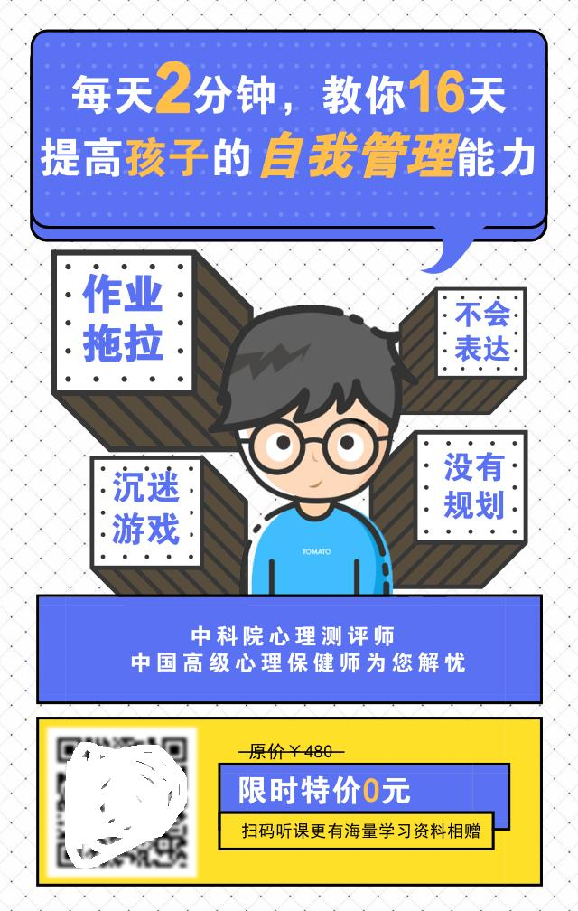
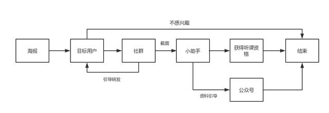
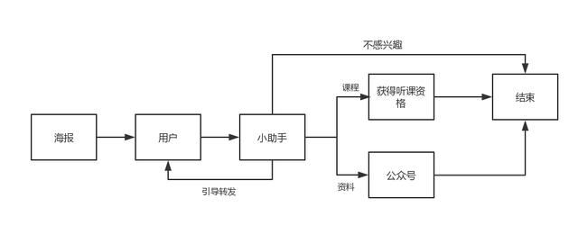
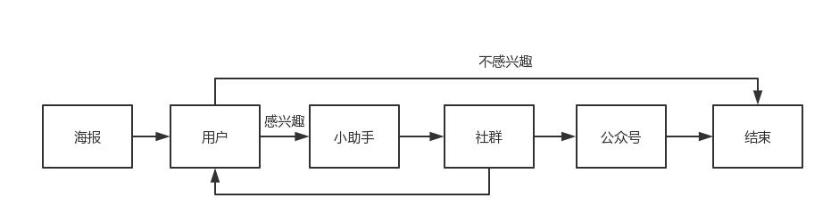
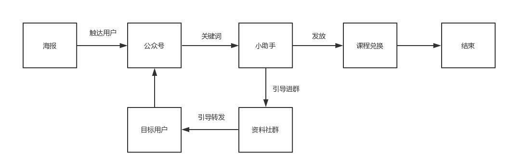
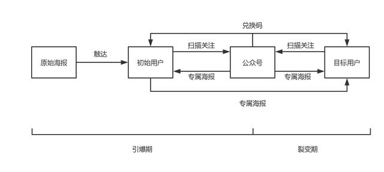
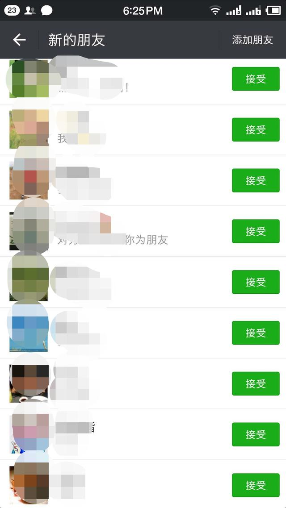
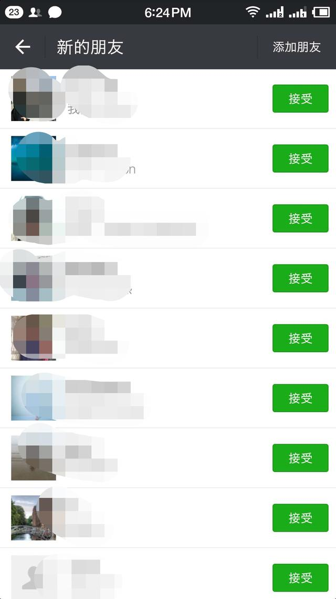

文章通过测试5种裂变模型的漏斗模型，并通过对比分析各自的优缺点，最后得出最佳的裂变流程及活动文案。
裂变增长可以说是2018年各个行业都在疯狂追逐的用户获取方式。
几乎每个月都有刷屏级别的案例出现在你我的朋友圈，比如网易戏精课、新世相营销课等等，而这些裂变活动带来的用户增长数据的曝光也一次又一次成为了大量运营者们趋之若鹜的最强动力，大家都在想裂变刷屏，都希望做一场日增几万甚至几十万的增长活动。
这背后除了利益的驱动，其实更重要的还是因为：大部分互联网行业的从业者都在面临一个现实的问题——流量成本太贵了。
规模化的有效流量有钱也买不到，大家都在拼命找新的流量入口，探索价值更高，价格更低的流量洼地，除此之外就是通过这种短期的，低成本的裂变增长形式，自建流量池。
而微信作为当下中国用户基数最大的国民级应用，其天然的社交属性和流量属性自然成为了裂变活动的最佳地点，但是随着微信对于短期大流量活动阀值的下调，基于公众号、H5以及小程序的万级以上的裂变活动也会越来越难以出现。
个人号搭配微信群的裂变活动因为第三方管理工具的逐渐完善和强大也逐渐走进大家的视野。
本月初我们策划了一场基于公众号的裂变涨粉活动，历时7天，一共测试了5种裂变模型，并通过数据分析找到了最佳的那一个。以下是本次活动的完整复盘。
二、前期准备
2.1 内容确定
本次我们选择的裂变内容是针对家长群体的家庭教育大师课。
经过讨论和小范围的渠道测试，我们最终将课程主题确定为：每天2分钟，教你16天提高孩子的自我管理能力，直截了当告诉目标用户课程能带给他的价值。
2.2 工具准备
- 第三方个人号及社群管理工具（免费）
- 6个个人微信号
- 活码管理工具，活码管理工具用于控制个人号的增粉速度和数量，规避封号风险，设定每增加200-300个好友切换一个个人号（即使这样，我们还是有4个号牺牲了）
2.3 时间安排
9月3日-9月4日：设计裂变流程、制作活动海报、活动测试
9月5日-9月9日：正式裂变周期
三、活动测试
在正式裂变开始之前我们一共测试了五种裂变模型，通过计算每种模型的漏斗模型以选出最佳的裂变流程及活动文案和每种裂变流程如下：
3.1 流程一
海报——群——小助手——公众号
裂变模型：
优缺点：群内转发率高，但是公众号关注率低
3.2 流程二
海报——小助手——公众号
裂变模型：
优缺点：公众号关注率高，但是转发率低
3.3 流程三
海报——小助手——群——公众号
裂变模型：
优缺点：转发率高，但公众号关注量低
3.4 流程四
海报——公众号——小助手——群
裂变模型：
优缺点：公众号关注量高，但是到小助手以及群的转化比较低
3.5 流程五
海报——公众号——海报——公众号（服务号1-N裂变）
裂变模型：
优缺点：涨粉效应明显，但是小助手的转化低
通过上面的对比，以及对于自己的涨粉目标的考虑，我们最终选定了模型三作为最终的裂变流程。
其他的裂变流程当然各有优劣，每个裂变所对应的漏斗数据模型我们也做了计算存档。
模型三最难的转化是在第一级转化。
一级转化的影响因素有很多，海报、文案、渠道质量、推广时间都是影响其裂变效果的因素，没有谁可以一次将所有因素都能做到最好，只能通过不断地测试调整，找到最佳的那个方案。
四、确定最终裂变流程
用户需要扫描添加个人号为好友，回复关键词即可被邀请入群，群内会有话术引导其转发海报及文案，并将截图发回群里进行审核，审核通过的用户即可收到个人号的私信获得课程的免费收听链接。
这个裂变模型的流程相对比较简单，既能满足我们初始的给小助手涨粉的目标，又能兼顾公众号。
唯一不足的是，尽管使用了活码工具进行切换，但是还是因为短时间进了太多人而被封号，还好事先我们提前让团队的伙伴都加了这些个人号，解锁起来也比较方便。
当然这个裂变过程对于个人号的管理人员来说，工作量是有些大，但是添加个人号并通过个人号私信课程资料的好处也是非常明显的。
- 好处一：群内用户的流失是无法控制的，先添加个人号可以减少用户的流失率，经过我们的计算，7天之内社群的用户流失率大概在30%，而个人号好友的流失率大概只有2.5%左右；
- 好处二：通过个人号可以进一步验证用户的朋友圈转发，防止秒删、浑水摸鱼；
- 好处三：个人号与用户产生互动会让用户的信任感和认同感大大提高；
- 好处四：可以引导拿到课程的用户在社群内分享收听课程的感触，进一步刺激群内的用户的转发分享。
本次活动我们的核心目的是给公众号增长粉丝，增加社群规模，因此裂变活动结束之后，我们将社群和小助手内的用户导流至公众号，进一步提高资源的利用率，减轻社群管理的压力。
五、总结反思
- 明确主要目的，不要什么都想要；
- 测试的目的是找到渠道、流程、文案话术、海报的最优组合，这一步必不可少；
- 有社群的话，要有足够强的群管理能力，群内的投诉是会蔓延的，因此要有足够多的话术及预案来应对；
- 服务号1-N的方法虽然效果不错，但是粉丝质量和忠诚度很成问题。
欢迎各位看官留言交流，共同进步~
本文由 @社长 原创发布于人人都是产品经理。未经许可，禁止转载
题图来自 Unsplash ，基于 CC0 协议


-
农博社 4天前 回复 38 -
裘鲜生 5天前 回复 0 -
呼市差米 5天前 回复 0 -
桂凤凰1 22小时前 回复 4 -
学拍短视频 4天前 回复 4
查看更多评论想知道小助手是什么的可以私聊我，告诉你们说什么神奇的免费软件
小助手是什么？不太懂
小助手是什么？
怎样联系你
小助手就是客服